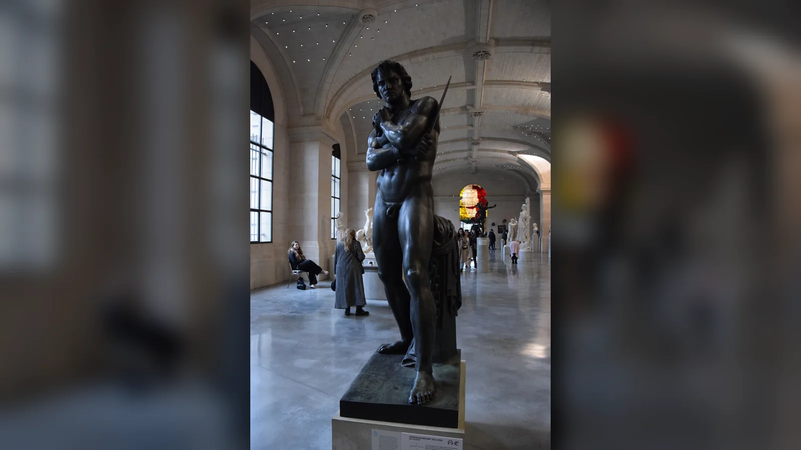
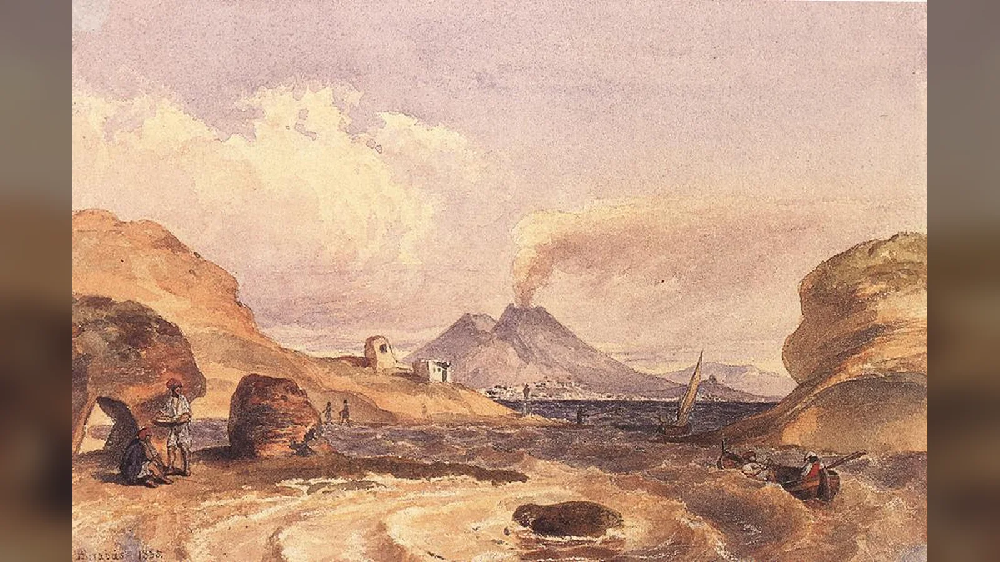
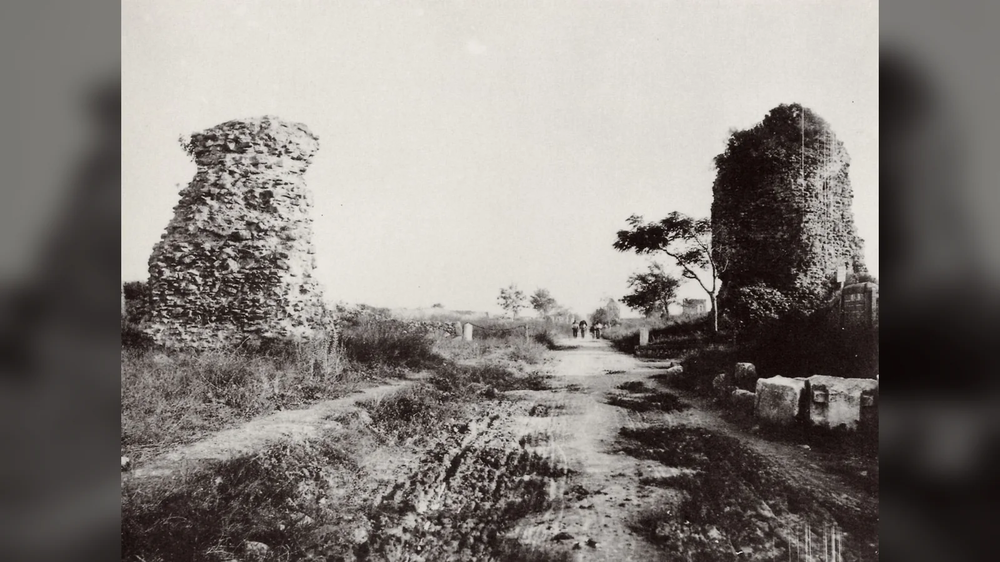

MÖ 73 yılında Capua'daki bir gladyatör okulundan kaçan birkaç düzine insanın Roma Cumhuriyeti'ni iki yıl boyunca ciddi bir askerî sorunla karşı karşıya bırakacağını kimse öngörmemişti. Kaçakların elinde başlangıçta düzenli bir ordunun silahları yoktu; antik anlatılardan birine göre mutfaktan aldıkları satır ve şişlerle dışarı çıkmış, daha sonra yolda ele geçirdikleri gladyatör silahlarıyla donanmışlardı. Roma makamlarının önce sıradan bir güvenlik sorunu gibi gördüğü hareket, kısa süre içinde kırsaldaki köleleştirilmiş insanların, çobanların ve başka kaçakların katıldığı büyük bir isyana dönüştü. Hareketin merkezindeki isim Spartaküs'tü.
Spartaküs kimdir sorusuna bugün verilen cevapların önemli bir bölümü antik kaynaklardan çok sonraki romanlar, siyasi hareketler ve özellikle 1960 yapımı Spartacus filminin yarattığı görüntülerden etkilenir. Tarihsel Spartaküs ise daha zor yakalanan bir figürdür. Kendi yazdığı bir metin, konuşma, manifesto veya siyasi program günümüze ulaşmamıştır. Onu anlatan başlıca metinlerin çoğu Roma seçkinlerinin bakış açısından ve olaylardan yıllar sonra yazılmıştır. Bu nedenle Spartaküs'ü köleliği bütün dünyada kaldırmayı amaçlayan modern bir devrimci olarak sunmak da, yalnız yağma peşinde koşan bir haydut olarak göstermek de kanıtların ötesine geçer. Bildiğimiz şey daha somut ve yine de olağanüstüdür: Trakya kökenli olduğu aktarılan bir gladyatör, MÖ 73--71 arasındaki Üçüncü Köle Savaşı'nda Roma kuvvetlerini defalarca yenebilen, on binlerce insanı peşinden sürükleyen ve Cumhuriyet'in İtalya'daki güvenlik düzenini sarsan bir askerî lider hâline geldi.
Spartaküs Kimdir?
Spartaküs'ün yaşamının isyandan önceki bölümü sis içindedir. Plutarkhos onu Trakyalı olarak tanımlar ve yalnız fiziksel gücüyle değil zekâsı ve karakteriyle de öne çıkan biri olarak betimler. Appianos da Trakyalı olduğunu söyler; ayrıca bir zamanlar Romalılarla askerlik yaptığını, daha sonra esir düşüp gladyatör olarak satıldığını aktarır. Bu kısa ifade, Spartaküs'ün neden Roma birliklerinin hareket tarzını anlayabildiğini açıklamak için sık sık kullanılır. Fakat hangi birlik içinde, ne kadar süreyle ve hangi koşullarda hizmet ettiği bilinmez. Roma ordusundan firar ettiği, yardımcı birliklerde görev yaptığı veya Roma'ya karşı savaşırken esir düştüğü gibi ayrıntılar modern yeniden kurmalarda görülse de antik kanıt bunları kesinleştirecek kadar ayrıntılı değildir.
Trakya da tek ve homojen bir siyasi kimlik değildi. Roma'nın Balkanlar'daki genişlemesi sırasında farklı Trak toplulukları Roma ile bazen ittifak, bazen çatışma içindeydi. Spartaküs'ün hangi topluluğa ait olduğu konusunda Plutarkhos'un kullandığı ifade farklı biçimlerde yorumlanmıştır. Bu yüzden "Spartaküs şu kabileden geliyordu" biçiminde aşırı kesin bir soy kütüğü kurmak güvenli değildir. Adının kökeni hakkında da popüler etimolojiler üretilmiştir; bunları tarihsel gerçek olarak sunmak için yeterli kanıt yoktur.
Plutarkhos, Spartaküs'ün yanında adı verilmeyen Trakyalı bir kadından da söz eder. Bu kadını bir kâhin olarak betimler ve Spartaküs uyurken yüzünün çevresine dolanan bir yılanı onun büyük bir güce ulaşacağına işaret saydığını anlatır. Kadının kaçış sırasında Spartaküs'le birlikte olduğunu da söyler. Bu hikâye biyografik bir ayrıntı kadar antik yazarların büyük kişilerin kaderini işaretlerle açıklama alışkanlığını da yansıtır. Kadının adını bildiğimizi iddia etmek doğru değildir; modern kurgu eserlerde verilen isimler antik kaynakların sağladığı bilgi değildir.
Spartaküs'ün nasıl köleleştirildiği de kesin değildir. Appianos'un askerlik, esaret ve satış zinciri önemli bir ipucudur; Florus ise onu Roma ordusundan firar eden, sonra haydut ve ardından gladyatör hâline gelen bir figür gibi sunar. Florus'un anlatısının ahlaki ve retorik niteliği nedeniyle bu zincirin her halkasını biyografik belge gibi okumak risklidir. Kesin olan, MÖ 73'e gelindiğinde Spartaküs'ün Capua'da Lentulus Batiatus'un işlettiği gladyatör okulunda bulunduğu ve buradan kaçan grubun liderlerinden biri olduğudur.
Bu noktada kronoloji de önemlidir. Spartaküs Roma İmparatorluğu'nun yıkılışından yüzyıllar önce, Roma İmparatorluğu'na karşı değil Cumhuriyet'e karşı savaştı. İsyan MÖ 73--71 yıllarında, Roma hâlâ Cumhuriyet ile yönetilirken gerçekleşti. Augustus'un tek hâkimiyetinin başlangıcına daha onlarca yıl vardı. Dolayısıyla Spartaküs'ü "Roma imparatoruna karşı ayaklanan köle" şeklinde anlatmak anakronizmdir. Onun karşısındaki devlet, senato, magistralar, konsüller ve rekabet hâlindeki aristokrat komutanlarla işleyen Geç Roma Cumhuriyeti'ydi.
Spartaküs Gerçekten Gladyatör müydü?
Evet. Spartaküs'ün gladyatör olduğu, birbirinden bağımsız antik geleneklerin ortaklaştığı en sağlam bilgilerden biridir. Capua, gladyatör eğitiminin önemli merkezlerinden biriydi ve Spartaküs Lentulus Batiatus'a ait okulda tutuluyordu. Plutarkhos burada bulunanların büyük bölümünün Galyalı ve Trakyalı olduğunu, yaklaşık iki yüz kişinin kaçış planladığını fakat planın açığa çıkması üzerine yalnız yetmiş sekiz kişinin kaçabildiğini anlatır. Appianos yaklaşık yetmiş kişiden, Livy'nin özetleri yetmiş dört gladyatörden söz eder. Florus ise daha düşük bir başlangıç sayısı verir. Bu farklılık, isyanın ilk saatlerine ilişkin rakamların bile kesin nüfus sayımı olmadığını gösterir.
Spartaküs'ün hangi gladyatör sınıfında dövüştüğü ise aynı kesinlikte bilinmez. İnternette sık sık onun "murmillo" olduğu söylenir; bazen Trakyalı kökeninden hareketle Thraex sınıfıyla ilişkilendirilir. Fakat etnik köken ile arena sınıfını doğrudan eşitlemek ve belirli bir ekipmanı kesin biçimde Spartaküs'e atfetmek için yeterli kanıt yoktur. Onun gladyatörlüğü gerçektir; kalkanının, miğferinin veya dövüş sınıfının ayrıntılı biçimde yeniden kurulması ise çok daha spekülatiftir.
Ayrıca Spartaküs Kolezyum'da dövüşmedi. Bugün Kolezyum dediğimiz Flavius Amfitiyatrosu'nun inşası Vespasianus döneminde MS 70'lerde başladı ve yapı Spartaküs'ün ölümünden yaklaşık bir buçuk yüzyıl sonra açıldı. Spartaküs döneminde Roma'da ve İtalya'nın başka kentlerinde gladyatör gösterileri vardı, fakat onu Kolezyum arenasına yerleştiren görseller tarihsel değildir. Gladyatörlerin eğitimi, beslenmesi, sınıfları ve günlük yaşamı başlı başına geniş bir konu olduğundan burada önemli olan, Capua okulunun Spartaküs için bir meslek okulundan çok zorla tutulduğu ve kaçışın planlandığı kapalı bir kurum olmasıdır.
Gladyatörlük deneyiminin isyandaki askerî rolüne katkısı olmuş olabilir. Arena eğitimi bireysel silah kullanımı, fiziksel dayanıklılık ve şiddet altında hareket etme becerisi kazandırıyordu. Ancak on binlerce insanı sevk ve idare etmek arena dövüşünden farklıdır. Spartaküs'ün sonraki başarıları gerçekten önceki askerî deneyime sahipse bunun önemini düşündürür; yine de hayatının bu bölümünü ayrıntılı bir Roma askerî kariyerine dönüştürmek kanıtın sınırlarını aşar.
Roma Cumhuriyeti'nde Kölelik Nasıl Bir Sistemdi?
Spartaküs İsyanı boşlukta ortaya çıkmadı. MÖ 2. ve 1. yüzyıllarda Roma'nın Akdeniz'deki savaşları çok büyük miktarda insanın esir edilip köle pazarlarına taşınmasına yol açtı. Köle emeği İtalya'nın tarım işletmelerinde, evlerde, atölyelerde, madenlerde ve çeşitli hizmetlerde kullanılıyordu. Köleleştirilmiş insanların yaşam koşulları aynı değildi. Eğitimli bir ev kölesi, muhasebeci veya öğretmenin yaşamı ile zincir altında ağır iş yapan bir maden kölesinin yaşamı arasında büyük fark bulunabilirdi. Bazıları azat edilme ihtimaline sahipti; bazıları ise son derece ağır ve ölümcül koşullarda çalışıyordu. Fakat hukuki temelde ortak nokta, özgür yurttaş statüsünden yoksun olmaları ve efendilerinin mülkiyet yetkisine tabi bulunmalarıydı.
Roma'nın fetihleri İtalya'daki toprak düzenini de etkiledi. Büyük mülklerde köle emeğinin kullanımının boyutu bölgeden bölgeye değişiyordu ve bütün İtalya'yı tek tip latifundia sistemiyle açıklamak doğru değildir. Bununla birlikte özellikle hayvancılık ve büyük tarımsal işletmelerde köleleştirilmiş çoban ve işçilerin önemli bir varlığı vardı. Kırsal alanda çalışan bazı kölelerin hareket serbestliği ev kölelerine göre farklıydı; çobanlar silah taşıyabiliyor ve geniş arazilerde dolaşabiliyordu. Bu durum isyan başladığında deneyimli ve fiziksel olarak dayanıklı insanların kaçaklara katılmasını kolaylaştırmış olabilir.
Spartaküs'ten önce Sicilya iki büyük köle savaşına sahne olmuştu. Birinci Sicilya Köle Savaşı MÖ 135--132, ikincisi MÖ 104--100 arasında gerçekleşti. Bu isyanlar binlerce köleleştirilmiş insanın örgütlenebildiğini ve Roma yönetiminin büyük askerî güç kullanmak zorunda kalabileceğini göstermişti. Dolayısıyla MÖ 73'teki ayaklanma Roma tarihindeki ilk köle direnişi değildi. Fakat İtalya yarımadasının merkezinde başlayıp Roma ordularını art arda yenmesi onu özellikle tehlikeli ve utanç verici hâle getirdi.
Kölelerin neden isyan ettiğini tek bir koşulla açıklamak da yanıltıcıdır. Antik kölelik, fiziksel şiddet tehdidinin yanı sıra aile bağlarının kopması, satılma, zorla çalıştırılma ve hukuki bağımlılık gibi çok katmanlı baskılar içeriyordu. Bütün kölelerin sürekli ayaklanma halinde olmaması bu sistemin hafif olduğu anlamına gelmez; isyan etmek son derece riskliydi ve devletin cezalandırma kapasitesi büyüktü. Spartaküs hareketinin büyümesi, Roma'nın fetihlerle yarattığı geniş köleleştirilmiş nüfusun belirli koşullarda büyük bir güvenlik krizine dönüşebileceğini gösterdi.
Capua'daki Gladyatör Okulundan Kaçış Nasıl Gerçekleşti?
Plutarkhos'a göre yaklaşık iki yüz gladyatör kaçış planladı, ancak plan ihbar edilince yalnız yetmiş sekizi zamanında harekete geçebildi. Kaçaklar mutfaktan satır ve şişler aldı; daha sonra yolda gladyatör silahları taşıyan arabalara rastlayıp bunları ele geçirdiler. Appianos yaklaşık yetmiş kişinin muhafızları aşarak kaçtığını, başlangıçta yoldan topladıkları sopa ve hançerlerle silahlandığını anlatır. Livy'nin Periochae özeti yetmiş dört kişiyi kaydeder. Rakamların farklı olması, olayın ana çerçevesini ortadan kaldırmaz: küçük bir gladyatör grubu Capua'dan kaçtı ve çok kısa sürede gerçek silahlar edinerek örgütlendi.
Spartaküs tek lider değildi. Crixus ve Oenomaus da ilk aşamada öne çıkan isimlerdi. Kaynaklar bu kişileri modern bir genelkurmay hiyerarşisinin "generalleri" gibi ayrıntılı rütbelerle tanımlamaz. Başlangıçtaki hareketin ortak liderleri veya önde gelen komutanları olarak düşünmek daha güvenlidir. Crixus sonraki aşamalarda ayrı bir kuvvete liderlik edecek, Oenomaus ise savaşın erken döneminde kaynaklardan kaybolacaktır; muhtemelen çatışmalardan birinde öldü.
Kaçışın başlangıçta kapsamlı bir İtalya savaşı olarak planlandığını gösteren kanıt yoktur. Bir gladyatör okulundan kaçmak ile Roma Cumhuriyeti'ne karşı iki yıllık bir savaş başlatmak aynı hedef değildir. İlk kararın temelinde özgürlüğe ulaşma isteği bulunduğu açıktır; Appianos bunu seyircilerin eğlencesi için dövüşmek yerine özgürlükleri için risk almak şeklinde anlatır. Ancak kaçaklar Vezüv çevresine ulaştığında kırsaldaki başka insanların katılması, hareketin ölçeğini değiştirdi. Küçük bir kaçış girişimi artık kendi güvenliği, erzağı ve geleceği için askerî kararlar vermek zorunda olan bir topluluğa dönüşüyordu.

Vezüv Dağı'ndaki İlk Zafer Nasıl Kazanıldı?
Kaçaklar Vezüv Dağı çevresindeki savunmaya elverişli araziye çekildi. Roma yönetimi başlangıçta hareketi tam ölçekli bir savaş olarak değerlendirmedi. Appianos, Spartaküs'e karşı gönderilen ilk kuvvetlerin düzenli lejyonlar olmadığını, aceleyle toplanmış birlikler olduğunu özellikle söyler. Roma aynı dönemde Akdeniz'in başka bölgelerinde ciddi savaşlarla uğraşıyordu; Mithridates'e karşı doğudaki mücadele ve Sertorius Savaşı İspanya'da önemli askerî kaynak tüketiyordu. Birkaç düzine kaçak gladyatörün yarattığı sorun, ilk anda Cumhuriyet'in en deneyimli ordularını gerektiren bir tehdit gibi görünmedi.
Plutarkhos'un ünlü anlatısında Gaius Claudius Glaber Spartaküs'ün bulunduğu Vezüv mevkiine çıkan tek uygun yolu tuttu ve kaçakları açlıkla teslim olmaya zorlamayı planladı. Spartaküs'ün adamları ise yabani asma dallarından sağlam ipler veya merdivenler yaparak Romalıların geçilemez saydığı sarp yamaçtan aşağı indi. Ardından Roma kampını arkadan vurup kuvveti dağıttılar. Bu ayrıntı Plutarkhos'tan gelir ve modern filmlerde sık sık dramatize edilir. Tam biçimini bağımsız kaynaklarla doğrulayamıyoruz, fakat isyancıların araziyi kullanarak Roma kuvvetini şaşırttığı ve ilk gönderilen birlikleri yenilgiye uğrattığı genel çerçeve diğer kaynaklarla uyumludur.
Bu zaferin önemi taktik ayrıntısından büyüktür. Kaçaklar artık yalnız takipçilerinden saklanan insanlar değildi; Roma kuvvetini savaşta yenmiş ve silah, zırh, malzeme ele geçirmişlerdi. Başarı haberi kırsalda yayıldıkça katılımlar arttı. Roma'nın küçük gördüğü güvenlik sorunu, kendisini silahlandırabilen ve devlet birliklerini yenebilen bir isyana dönüştü. Bu aşamadan sonra Spartaküs'ün karşısındaki temel problem yalnız kaçmak değil, hızla büyüyen bir topluluğu beslemek, silahlandırmak ve birlikte hareket ettirmekti.
Spartaküs'ün Ordusu Nasıl Büyüdü?
Antik kaynaklar Spartaküs'ün kuvvetinin kısa sürede on binlere ulaştığını söyler. Appianos bir aşamada yaklaşık yetmiş bin kişiden, daha sonra yüz yirmi bin gibi daha yüksek rakamlardan söz eder; başka geleneklerde farklı sayılar bulunur. Bu rakamlar modern nüfus sayımı değildir. Antik savaş anlatılarında ordu büyüklükleri tahmin, propaganda veya edebî yuvarlama içerebilir. Üstelik "Spartaküs'ün ordusu" denilen topluluğun tamamının aynı anda silahlı savaşçı olup olmadığı da her zaman açık değildir. Kampı takip eden aileler, destekçiler ve savaş dışı kişiler bulunmuş olabilir.
Katılımcıların önemli bölümü kırsaldaki köleler ve çobanlardı. Appianos bazı özgür kırsal insanların da harekete katıldığını söyler. Bu, isyanı yalnız gladyatörlerden oluşan bir ordu gibi düşünmenin yanlış olduğunu gösterir. İlk çekirdeğin arena eğitimi almış savaşçılar olması önemliydi, fakat hareket büyüdükçe farklı dilleri, kökenleri ve beklentileri olan insanlardan oluşan heterojen bir topluluğa dönüştü. Kaynakların "Galyalılar", "Germenler" ve başka gruplardan söz etmesi, ordunun içinde kimlik ve liderlik ayrışmalarının bulunabileceğini düşündürür.
Büyüme aynı zamanda lojistik kriz demekti. On binlerce insanın her gün yiyecek, su, ayakkabı, giysi ve silaha ihtiyacı vardı. Düzenli bir devletin vergi ve depo sistemi olmadan bunları sağlamak yağma, yerel üretim, ticaret ve ele geçirilen Roma malzemelerine dayanıyordu. Spartaküs'ün ele geçirilen ganimeti paylaştırdığına ilişkin anlatılar, liderliğinin takipçi çekmesinde etkili olmuş olabilir. Appianos onun ganimeti eşit paylaştırdığını söyler. Sallustius'un parçaları ve sonraki gelenekler isyancı kampındaki disiplin konusunda bazı ayrıntılar taşır; fakat bunlardan eksiksiz bir eşitlikçi anayasa çıkarmak mümkün değildir.
Spartaküs'ün askerî yeteneği bu karmaşık yapıyı belirli süre ayakta tutabilmesinde görülür. Kuvvetleri hareketliydi, araziyi iyi kullanıyor ve Roma komutanlarının hatalarından yararlanıyordu. Eğer Appianos'un belirttiği gibi daha önce Roma kuvvetlerinde hizmet etmişse, Roma taktikleri ve kamp düzeni hakkında bilgi sahibi olması önemli avantaj sağlamış olabilir. Fakat bu bağlantı olasılık düzeyinde tutulmalıdır. Spartaküs'ün başarısını yalnız "eski Roma subayıydı" gibi kanıtlanmamış bir biyografiye bağlamak yerine, iki yıllık savaş boyunca gösterdiği pratik liderliğe bakmak daha sağlamdır.
Spartaküs Roma Ordularını Nasıl Yenmeyi Başardı?
Roma'nın ilk yenilgilerinin önemli nedeni, isyanın başlangıçta yanlış ölçekte değerlendirilmesiydi. Cumhuriyet'in en iyi birlikleri Mithridates ve Sertorius gibi büyük dış ve iç savaş cephelerinde meşguldü. Spartaküs'e karşı gönderilen ilk kuvvetler aceleyle toplanmıştı. Appianos Romalıların bunu başlangıçta gerçek bir savaş değil, haydut baskını gibi gördüklerini açıkça belirtir. Bu küçümseme, isyancılara silah ve deneyim kazanabilecekleri zaman verdi.
Spartaküs ve arkadaşları ilk Roma komutanlarının kamplarını ele geçirerek daha iyi silahlandılar. Praetor Publius Varinius'un kuvvetlerine karşı başarılar, hareketin itibarını büyüttü. Kaynaklarda komutan adları ve çatışmaların ayrıntıları her zaman aynı sırayla verilmez; bu nedenle modern bir savaş günlüğü kesinliğiyle her muharebenin gününü ve yerini belirlemek mümkün değildir. Yine de MÖ 73 sonuna gelindiğinde Roma'nın yerel ölçekteki müdahalelerinin başarısız olduğu açıktır.
MÖ 72'de tehdit artık konsül ordularının gönderilmesini gerektirecek düzeye ulaşmıştı. Lucius Gellius Publicola ve Gnaeus Cornelius Lentulus Clodianus'un kuvvetleri isyancılarla savaştı. Crixus'un ayrı grubu Garganus çevresinde yenildi ve Crixus öldürüldü; buna karşılık Spartaküs diğer Roma kuvvetlerini yenerek kuzeye ilerledi. Kaynaklar savaşların sırasını ve Spartaküs'ün tam rotasını farklı verir. Appianos ile Plutarkhos'u tek bir kusursuz kronolojiye zorlamak, metinlerde olmayan kesinlik yaratır.
Roma ordularının yenilmesi, lejyonların "zayıf" olduğu anlamına gelmez. Cumhuriyet ordusu komutan kalitesine, askere alma koşullarına ve birliklerin deneyimine göre değişiyordu. Spartaküs'ün hareketli savaş tarzı, düzenli orduların onu belirli bir yerde sıkıştırmasını zorlaştırdı. Ayrıca isyancılar için yenilgi köleliğe dönüş veya ölüm anlamına gelebiliyordu; savaşın varoluşsal niteliği dirençlerini artırmış olabilir. Roma ise ancak Crassus'a geniş komuta ve ciddi kaynak verildiğinde savaşı sistematik biçimde ele aldı.
Crixus Neden Spartaküs'ten Ayrıldı?
Crixus isyanın başlangıcından itibaren öne çıkan liderlerden biriydi. MÖ 72'de kuvvetlerin bir bölümünün Spartaküs'ten ayrıldığı ve Crixus'un komutasındaki grubun Garganus Dağı civarında Roma kuvvetleri tarafından yenildiği anlatılır. Appianos bu grubun büyüklüğünü yaklaşık otuz bin olarak verir; Livy özeti Crixus'la birlikte yirmi bin kişinin öldürüldüğünü söyler. Bu rakamların kesin olmadığı unutulmamalıdır.
Ayrılığın nedeni bilinmez. Modern anlatılarda Crixus'un İtalya'da kalıp yağma yapmak istediği, Spartaküs'ün ise Alpler üzerinden kaçmak istediği sıkça söylenir. Bu açıklama Plutarkhos'un Spartaküs'ün Alpleri aşma hedefiyle uyumlu görünse de Crixus'un kendi niyetini açıklayan bir metin yoktur. Etnik ayrışma, liderlik rekabeti, strateji farkı veya ganimet beklentisi gibi ihtimaller ileri sürülebilir; hiçbiri kesin hüküm hâline getirilemez.
Appianos, Spartaküs'ün Crixus'un ölümünden sonra üç yüz Roma esirini onun anısına gladyatör dövüşlerinde karşı karşıya getirdiğini aktarır. Bu sahne ironiktir: Roma'nın eğlencesi için dövüştürülmüş kaçak gladyatörler, şimdi Romalı esirleri aynı biçimde dövüştürmektedir. Fakat ayrıntı yalnızca bir anlatı geleneğine dayandığı için ihtiyatla kullanılmalıdır. Doğruysa, isyanın modern romantik özgürlük hikâyesine sığmayan şiddetli yönlerinden birini gösterir.
Spartaküs İtalya'dan Kaçmak mı, Roma'ya Yürümek mi İstiyordu?
Spartaküs'ün uzun vadeli hedefi, isyan tarihinin en önemli ve çözülemeyen sorularından biridir. Plutarkhos'a göre Spartaküs, Roma'nın gücünü yenemeyeceğini düşündüğü için Alpleri aşmayı ve takipçilerinin buradan kendi memleketlerine, bazılarını Galya'ya bazılarını Trakya'ya dağıtmasını amaçlıyordu. Bu anlatı Spartaküs'ü gerçekçi bir komutan olarak gösterir: amacı Roma'yı fethetmek değil, İtalya'dan çıkmaktır. Ancak Plutarkhos aynı zamanda adamlarının kendilerine güvenerek onu dinlemediğini, İtalya'da yağma yapmaya devam ettiklerini söyler.
Appianos farklı bir çerçeve sunar. Spartaküs'ün Roma üzerine yürümeyi düşündüğünü, fakat kuvvetlerinin yeterince donanımlı olmadığını ve hiçbir kentin ona katılmadığını fark ederek bu düşünceden vazgeçtiğini anlatır. Bu iki gelenek aynı stratejik programı vermez. Birinde kuzeye çıkış ve dağılma, diğerinde Roma'ya yönelme ihtimali vardır. Üstelik savaş boyunca koşullar değişmiş olabilir; Spartaküs'ün iki yıl boyunca tek ve değişmez bir plan izlediğini varsaymak zorunda değiliz.
Elimizde Spartaküs'ün kendi açıklaması olmadığı için "tek amacı özgürlüğe kaçmaktı" demek de "Roma'yı ele geçirip yeni devlet kurmak istiyordu" demek de fazla kesindir. Bir hareketin hedefleri katılımcı sayısı arttıkça değişebilir. Başlangıçta okuldan kaçış, sonra güvenli bölge arayışı, ardından İtalya'dan çıkma veya savaşın fırsatlarına göre başka kararlar birbirini takip etmiş olabilir. Spartaküs'ün takipçilerinin de tek bir amaç taşıdığı varsayılamaz.
Roma kentine saldırmaması özellikle önemlidir. Kaynaklarda Roma'ya yürüyüş korkusu görülür, fakat Spartaküs Roma'yı ele geçirmedi ve kuşatmadı. Cumhuriyet'i başkentinde devirmek üzere olduğu yönündeki popüler anlatılar bu nedenle abartılıdır. Yine de Roma'nın böyle bir ihtimalden korkması, isyanın psikolojik etkisini gösterir.
Spartaküs Neden Alpler'i Aşmadı?
MÖ 72'de Spartaküs'ün kuzeye doğru önemli bir ilerleme yaptığı ve Cisalpine Galya yönüne ulaştığı genel olarak kabul edilir. Plutarkhos onun Mutina civarında prokonsül Gaius Cassius'un kuvvetini yenmesinden sonra Alplere geçebilecek konuma geldiğini düşündürür. Fakat isyancı kuvvetler güneye döndü. Bu karar, savaşın en büyük bilmecelerinden biridir.
Plutarkhos sorumluluğu büyük ölçüde Spartaküs'ün adamlarına yükler: başarılarından dolayı kendilerine aşırı güvenmiş, komutanlarını dinlememiş ve İtalya'yı yağmalamaya devam etmişlerdir. Bu açıklama mümkün olmakla birlikte Plutarkhos'un lider ile kontrolsüz kitle arasında kurduğu ahlaki karşıtlığı da yansıtır. Ordunun içindeki farklı grupların hedefleri gerçekten çatışmış olabilir; fakat "bütün köleler yağmayı özgürlüğe tercih etti" biçiminde genelleme yapmak doğru değildir.
Coğrafya ve lojistik de hesaba katılmalıdır. On binlerce kişilik heterojen bir topluluğu Alplerden geçirmek, özellikle savaş dışı takipçiler varsa, basit bir kaçış rotası değildi. Hangi geçidin kullanılacağı, erzak, hava koşulları ve karşı taraftaki siyasi ortam gibi sorunlar vardı. Ayrıca antik kaynakların rota ve tarihlerindeki uyuşmazlık, Spartaküs'ün tam olarak hangi noktada ne kadar gerçekçi bir Alp geçiş fırsatına sahip olduğunu belirsizleştirir.
Bu yüzden dönüşü tek bir psikolojik kararla açıklamak yerine, kaynakların sınırını kabul etmek gerekir. Spartaküs güneye döndü; nedenini kesin bilmiyoruz. Bu karar sonunda onu Roma'nın giderek daha ciddi seferberliğiyle karşı karşıya bıraktı.
Marcus Licinius Crassus İsyanı Nasıl Bastırdı?
MÖ 72'nin sonlarına doğru Roma için mesele artık birkaç başarısız praetor seferinden ibaret değildi. Konsül kuvvetlerinin de sorun yaşaması üzerine komuta Marcus Licinius Crassus'a verildi. Crassus Cumhuriyet'in en zengin adamlarından biriydi ve büyük siyasi hırsları vardı. Sulla dönemindeki iç savaşlardan servet ve nüfuz kazanmıştı; Spartaküs savaşı ona askerî prestij elde etme fırsatı sundu. Kaynaklar emrine sekiz lejyonluk büyük bir kuvvet verildiğini aktarır.
Crassus'un yaklaşımı önceki komutanlardan daha sert ve sistemliydi. Plutarkhos, komutanlarından Mummius'un emre aykırı biçimde Spartaküs'le çatışıp yenilmesinden sonra Crassus'un eski Roma disiplin cezası decimatioyu uyguladığını anlatır. Decimatio'da suçlu veya korkak sayılan birlik gruplara ayrılıyor, kura veya seçime dayalı biçimde yaklaşık her on kişiden biri kendi silah arkadaşları tarafından öldürülüyordu. Uygulamanın ayrıntıları kaynaklara göre değişebilir ve Spartaküs Savaşı'ndaki ölçek konusunda tartışma vardır; fakat anlatının amacı açıktır: Crassus askerlerine düşmandan çok kendi komutanlarının disiplininden korkmaları gerektiğini göstermek istiyordu.
Bu cezayı "her onuncu Roma askeri rastgele öldürüldü" şeklinde bağlamsız aktarmak eksik olur. Decimatio olağan bir günlük disiplin yöntemi değildi; arkaik ve aşırı bir ceza olarak korkutucu etkisi vardı. Crassus'un bunu kullanması, Roma'nın savaşın bu aşamasında yenilgileri artık tahammül edilemez gördüğünü gösterir. Aynı zamanda Crassus'un sonraki ününde acımasız disiplin imgesini güçlendirdi.
Crassus birlikleri yeniden düzenledikten sonra Spartaküs'ü güneye doğru baskılamaya başladı. Artık karşısında isyanı küçümseyen acele kuvvetler değil, savaşı bitirmek için kaynak ve yetki verilmiş deneyimli bir aristokrat komutan vardı. Bu değişim isyanın son evresini belirledi.
Crassus'un Hendek ve Duvar Hattı Spartaküs'ü Nasıl Sıkıştırdı?
Spartaküs kuvvetleri İtalya'nın güney ucuna, Rhegium çevresine çekildiğinde Crassus onları yarımadada sıkıştırmaya çalıştı. Plutarkhos, Crassus'un denizden denize uzanan büyük bir hendek ve tahkimat hattı yaptırdığını, böylece isyancıların kuzeye çıkışını kesmeyi amaçladığını anlatır. Antik metin uzunluğu ve ölçüleri rakamlarla verir; bunları modern arazi ölçümüyle doğrulanmış kesin mühendislik planı gibi sunmak yerine kaynak anlatısı olarak değerlendirmek gerekir.
Tahkimatın amacı yalnız fiziksel engel oluşturmak değildi. Büyük isyancı topluluğunu dar bölgede tutmak erzak sıkıntısını büyütecek, hareket kabiliyetini ortadan kaldıracak ve Spartaküs'ü Roma'nın istediği koşullarda savaşa zorlayacaktı. Crassus böylece Spartaküs'ün en büyük avantajlarından biri olan hareketliliği hedef aldı.
Plutarkhos'a göre Spartaküs kış gecelerinden birinde hendek hattının bir bölümünü toprak, odun ve malzemeyle doldurarak kuvvetlerinin bir kısmını geçirmeyi başardı. Bu başarı kuşatmayı kırdı, fakat savaşın stratejik dengesini değiştirmedi. Roma artık ek kuvvetler çağırıyordu; Pompeius İspanya'dan dönmekte, Lucullus'un kuvvetlerinin de İtalya'ya ulaşma ihtimali belirmekteydi. Spartaküs için zaman daralıyordu.
Spartaküs Sicilya'ya Geçmek İstedi mi?
Plutarkhos, Spartaküs'ün Sicilya'ya geçmek için Kilikyalı korsanlarla anlaşma yaptığını anlatır. Planın, küçük bir kuvveti adaya geçirip Sicilya'daki köleleri yeniden ayaklandırmak olduğu söylenir. Sicilya'nın daha önce iki büyük köle savaşına sahne olduğu düşünülürse böyle bir hedef stratejik açıdan anlamlıdır. Yeni bir isyan Roma'yı iki cepheli bir krizle karşı karşıya bırakabilirdi.
Ancak korsanlar Spartaküs'ü taşımadı. Plutarkhos onların hediyeleri aldıktan sonra onu aldattığını ve bölgeden ayrıldığını söyler. Bu olay çoğu modern anlatıda "korsanların ihaneti" olarak dramatize edilir. Fakat elimizde korsanların kendi açıklaması veya anlaşmanın koşullarını gösteren belge yoktur. Ödeme, güvenlik, Roma baskısı veya anlaşmanın niteliği hakkında kesin konuşamayız.
Spartaküs'ün sallarla boğazı geçmeye çalıştığı da anlatılır, ancak akıntı ve koşullar buna izin vermemiştir. Sicilya planının başarısızlığı onu Calabria'da Crassus'un baskısı altında bıraktı. Bu aşamadan sonra isyanın stratejik seçenekleri hızla azaldı.
Spartaküs Nasıl Öldü?
MÖ 71'de Spartaküs ile Crassus arasındaki son büyük çatışma isyanın kaderini belirledi. Savaşın tam yerini kesin biçimde saptamak zordur; güney İtalya'daki Lucania bölgesiyle ilişkilendirilir. Kaynakların coğrafi ayrıntıları modern haritada tek bir noktaya güvenle sabitlenemez. Kesin olan, Spartaküs'ün ordusunun büyük bölümünün Crassus'un kuvvetleri tarafından yenildiği ve Spartaküs'ün savaş sırasında öldüğüdür.
Plutarkhos son savaşı kahramanca bir sahneyle anlatır. Spartaküs atını kendisine getirenlere, kazanırsa düşmanın çok sayıda iyi atına sahip olacağını, kaybederse ata ihtiyacı olmayacağını söyleyerek hayvanı öldürür. Ardından Crassus'a ulaşmaya çalışır, iki centurionu öldürür ve çevresi sarıldığında savaşmayı sürdürerek düşer. Appianos da onun yaralandıktan sonra diz çökerek kalkanıyla kendini koruduğunu ve çevresindekilerle birlikte öldürüldüğünü anlatır. Bu sahneler Spartaküs'ün savaşta öldüğü konusunda birleşir, fakat Plutarkhos'un verdiği doğrudan konuşmayı kelimesi kelimesine kaydedilmiş son söz olarak kabul edemeyiz.
Spartaküs'ün cesedi bulunamadı veya en azından güvenilir biçimde teşhis edilmedi. Bu ayrıntı, ölümünden sonra efsanesinin büyümesine uygun bir boşluk yarattı. Fakat tarihsel anlatıda onun kaçtığını veya gizlice yaşamaya devam ettiğini düşündürecek kanıt yoktur. Kaynaklar savaşta öldüğü konusunda nettir.
Spartaküs çarmıha gerilmedi. Modern görsel hafıza bu konuda kolayca karışabilir çünkü savaşın ardından binlerce esir çarmıha gerildi ve 1960 filmi bu cezayı hikâyenin merkezine yerleştirdi. Antik kaynakların Spartaküs için verdiği ölüm biçimi savaş alanıdır. Çarmıha gerilenler, yenilgiden sonra ele geçirilen hayatta kalan isyancılardı.

Altı Bin Köle Gerçekten Appia Yolu'nda Çarmıha Gerildi mi?
Appianos, Crassus'un ele geçirilen yaklaşık altı bin isyancıyı Capua'dan Roma'ya uzanan Appia Yolu boyunca çarmıha gerdirdiğini aktarır. Bu sayı antik kaynağa dayanır ve Spartaküs Savaşı'nın en bilinen son görüntülerinden biridir. Fakat altı bin rakamını bağımsız bir idari kayıtla doğrulayamıyoruz; antik tarihçilerin büyük rakamları konusunda genel olarak ihtiyat gerekir.
Çarmıha germe Roma dünyasında özellikle köleler ve statüsü düşük kişiler için aşağılayıcı ve kamusal bir ölüm cezasıydı. Yol boyunca yüzlerce veya binlerce cesedin sergilenmesi yalnız mahkûmları cezalandırmak değil, seyahat eden herkese devlet otoritesini göstermek anlamına geliyordu. İsyanın başlangıcı Capua'daki kölelerin kaçışıydı; sonunun aynı güzergâhta korkutucu bir devlet gösterisine dönüştürülmesi güçlü bir siyasi mesaj taşıyordu.
Bu cezayı anlatırken gereksiz vahşet ayrıntıları üretmeye ihtiyaç yoktur. Tarihsel önemi, Roma'nın iki yıl boyunca meydan okuyan hareketin ardından caydırıcılığı yeniden kurmak istemesidir. Spartaküs'ün kendisinin bu çarmıhlar arasında olmadığı özellikle korunmalıdır.
Pompeius İsyanın Bastırılmasında Nasıl Pay Sahibi Oldu?
Crassus son savaşı kazanırken Pompeius İspanya'daki Sertorius Savaşı'ndan İtalya'ya dönüyordu. Spartaküs'ün ana kuvveti Crassus tarafından yenildikten sonra kaçan bazı isyancı grupları Pompeius'un birlikleriyle karşılaştı ve öldürüldü. Pompeius Senato'ya yazdığı mesajda Crassus'un açık savaşta kaçakları yendiğini, kendisinin ise savaşın kökünü kazıdığını ileri sürdü. Bu ifade askerî zaferin siyasi kredisi üzerindeki rekabeti gösterir.
İsyanı asıl kıran komutan Crassus'tu. Büyük tahkimat, sistematik takip ve son savaş onun komutasında gerçekleşti. Pompeius'un son kaçakları temizlemesi gerçek bir katkıydı, fakat savaşın temel zaferini ona vermek yanlış olur. Buna rağmen Pompeius'un zaten yüksek olan askerî itibarı, kamuoyunda başarıdan pay almasını kolaylaştırdı.
Crassus ile Pompeius kısa süre sonra MÖ 70 yılı için birlikte konsül seçildi; onların yükselişinin derinleştirdiği Cumhuriyet krizi, daha sonra Julius Caesar'ın öldürülmesine uzanan siyasi ortamın parçalarından biri olacaktı. İki adam arasındaki rekabet Roma siyasetinin sonraki dönemlerinde de önem taşıdı ve yıllar sonra Caesar'la birlikte Birinci Triumvirlik diye anılan siyasi ittifakın parçaları oldular. Fakat Spartaküs Savaşı'nı sonraki Caesar tarihine dönüştürmemek gerekir; burada önemli olan, Roma aristokrat siyasetinde askerî zaferin kişisel prestij ve makam için ne kadar değerli olduğudur.
Spartaküs Köleliği Kaldırmak mı İstiyordu?
Spartaküs'ün köleliği bir kurum olarak bütün Roma dünyasında ortadan kaldırmayı amaçladığını gösteren hiçbir manifesto, yasa tasarısı veya kendi sözleri yoktur. Bu nedenle onu modern anlamda kölelik karşıtı bir siyasi programın lideri gibi sunmak tarihsel kanıtı aşar. Antik kaynaklar onun kaçakların özgürlüğü için savaştığını, büyük bir isyan ordusu yönettiğini ve Roma'dan kurtulmaya çalıştığını gösterir; evrensel bir abolüsyon programını göstermez.
Bu ayrım isyanın özgürlük boyutunu küçültmez. Köleleştirilmiş insanların sahiplerinden kaçması, silahlanması ve onları yeniden köleleştirmek isteyen devlet ordularına karşı savaşması doğrudan bir özgürleşme eylemidir. Fakat kişisel ve toplu özgürleşme ile bütün kölelik kurumunu teorik olarak kaldırmayı hedefleyen modern siyasi hareket aynı şey değildir.
Appianos Spartaküs'ün ganimeti eşit paylaştırdığını söyler. Bazı daha geç veya parçalı geleneklerde altın ve gümüşün kampta kullanımına ilişkin disiplin önlemleri de Spartaküs'e bağlanır. Bu tür bilgiler, ordunun dayanışmasını ve lojistiğini korumaya yönelik uygulamalar olarak okunabilir. Bunlardan sınıfsız toplum, özel mülkiyetin kaldırılması veya kapsamlı sosyal devrim programı çıkarmak mümkün değildir.
Spartaküs'ün modern devrimci sembole dönüşmesi daha sonraki çağların tarihidir. İnsanlar kendi dönemlerinin eşitlik, sınıf ve özgürlük mücadelelerini antik isyana yansıttılar. Tarihsel Spartaküs ile sembolik Spartaküs birbirini tamamen dışlamaz; fakat aynı kişi de değildir.
"Ben Spartaküs'üm" Sözü Gerçek mi?
Hayır. "Ben Spartaküs'üm" sahnesi antik kaynaklarda bulunmaz. Ünlü sahne Stanley Kubrick'in 1960 yapımı Spartacus filminde, yenilmiş isyancılardan Spartaküs'ü teşhis etmeleri istendiğinde insanların sırayla ayağa kalkıp "I'm Spartacus" demesiyle oluşur. Sahne dayanışmanın, kimliği paylaşarak bir kişiyi korumanın ve baskıya karşı kolektif direnişin sinema tarihindeki en tanınmış sembollerinden biri hâline geldi.
Film Howard Fast'ın romanından uyarlanmıştı ve Kirk Douglas'ın Spartaküs yorumu modern popüler kültürde tarihsel kişiliğin görüntüsünü büyük ölçüde belirledi. Ancak gerçek savaşın sonunda Spartaküs'ün kimliğinin esirler arasında saklandığına dair antik anlatı yoktur. Kaynaklara göre Spartaküs son muharebede öldü ve cesedi bulunamadı; hayatta kalan esirlerin onu teslim etmeyi reddettiği sahne tarihsel kayıt değildir.
Bu ayrım filmin kültürel değerini azaltmaz. "Ben Spartaküs'üm" sözü modern dayanışma diline girmiştir. Fakat Antik Bilge açısından önemli olan, etkileyici bir sinema sahnesini MÖ 71'de gerçekten söylenmiş bir cümle gibi aktarmamaktır.
Antik Kaynaklar Spartaküs'ü Nasıl Anlatıyor?
Spartaküs Savaşı'nın kaynak sorunu olağanüstü büyüktür. Olaylara en yakın önemli yazarlardan Sallustius'un Historiae eseri tam hâliyle günümüze ulaşmamıştır; yalnız parçalar vardır. Livy'nin ilgili kitapları da kayıptır ve elimizde kısa Periochae özetleri bulunur. Daha ayrıntılı anlatılar Plutarkhos, Appianos ve Florus gibi daha sonraki yazarlardan gelir. Bu nedenle modern tarihçi, birbirinden farklı amaçlarla yazılmış eksik metinleri karşılaştırmak zorundadır.
Plutarkhos MS 1. yüzyıl sonu ile 2. yüzyıl başında yaşayan Yunan biyografi yazarıydı. Spartaküs'ü bağımsız bir biyografinin kahramanı olarak değil, Crassus'un yaşam öyküsünün içinde anlatır. Bu nedenle odak sonunda Crassus'un karakteri ve kariyeridir. Buna rağmen Spartaküs hakkında en canlı ayrıntıların bazılarını verir: Capua kaçışı, Trakyalı kadın, Vezüv manevrası, Alpleri aşma planı, korsan anlaşması, Crassus'un tahkimatı ve son savaş. Spartaküs'ün zekâsını ve kültürünü küçümsememesi dikkat çekicidir.
Appianos da MS 2. yüzyılda yazdı. Civil Wars içinde Spartaküs olayını Roma Cumhuriyeti'nin iç çatışmaları bağlamına yerleştirir. Spartaküs'ün daha önce Romalılarla askerlik yaptığını, ganimeti eşit dağıttığını, Roma'ya yürümeyi düşündüğünü ve son savaşta nasıl öldüğünü aktarır. Onun kronolojisi Plutarkhos'la her zaman uyuşmaz. İki kaynağı mekanik biçimde birleştirip çelişkisiz tek anlatı üretmek yerine ayrıldıkları noktaları göstermek daha doğrudur.
Florus'un Epitomesi güçlü retorik taşır ve Roma halkının savaşlarını ahlaki bir çerçevede anlatır. Spartaküs savaşını Roma açısından utanç verici bulur; kölelerin ve gladyatörlerin Roma'ya savaş açmasını toplumsal hiyerarşinin tersine dönmesi gibi sunar. Bu küçümseyici dil, aynı zamanda Roma seçkinlerinin isyanı neden aşağılayıcı bir tehdit olarak gördüğünü anlamamıza yardım eder.
Sallustius olaylara kronolojik olarak çok daha yakındı ve Spartaküs Savaşı'nı kapsayan Historiae yazmıştı, fakat metnin parçalı oluşu kullanımını zorlaştırır. Livy'nin tam anlatısının kaybı da büyük boşluktur. Periochae bize bazı komutanları, kaçış sayısını ve savaşların genel çizgisini verir, ancak ayrıntılı gerekçeleri kaybetmiştir. Frontinus gibi askerî strateji yazarları ise Spartaküs'e atfedilen taktikleri örnek olarak korur.
Kaynakların tümü Roma dünyasının eğitimli yazı kültüründen gelir; isyancıların kendi arşivi yoktur. Bu nedenle Spartaküs'ün ne düşündüğünü çoğu zaman onu yenmeye çalışan toplumun metinlerinden çıkarmaya çalışıyoruz. Yine de bu metinler onu yalnız küçümsemez. Plutarkhos'un zekâsını övmesi, Roma komutanlarının defalarca yenilmesi ve Crassus'un olağanüstü tedbirlere başvurması Spartaküs'ün askerî yeteneğinin düşman kaynaklarda bile silinemediğini gösterir.
Spartaküs İsyanı Roma'yı Gerçekten Sarstı mı?
"Roma'yı sarstı" ifadesi doğru kullanılmazsa Spartaküs'ü Cumhuriyet'i yıkmanın eşiğine gelmiş bir fatih gibi gösterebilir. İsyancılar Roma kentini ele geçirmedi, kalıcı bir devlet kurmadı ve Roma'nın Akdeniz egemenliğini ortadan kaldırabilecek kurumsal kaynaklara sahip değildi. Cumhuriyet aynı yıllarda çok daha geniş coğrafyalarda büyük ordular yönetebiliyordu. Spartaküs'ün sonunda Crassus'un yoğun seferberliği karşısında yenilmesi güç dengesini gösterir.
Bununla birlikte isyanı sıradan bir haydutluk olayı gibi küçültmek de yanlıştır. Hareket iki yıl sürdü, praetor kuvvetlerini ve konsül ordularını yendi, İtalya'nın geniş bölgelerinde hareket etti ve Roma'nın sekiz lejyonluk ciddi bir kuvveti Crassus'un emrine vermesine yol açtı. Pompeius'un dönüşünün ve başka orduların çağrılmasının hesaba katılması, Senato'nun savaşın son aşamasında tehlikeyi ciddiye aldığını gösterir.
İsyan Roma'nın köle emeğine dayalı düzenindeki güvenlik sorununu görünür kıldı. İtalya'da çok sayıda köleleştirilmiş insanın bulunması ekonomik sistem için yararlıydı, fakat savaş deneyimi olan, kırsalda hareket edebilen veya ağır koşullarda çalışan büyük nüfusların devlet kontrolünden çıkması ciddi risk yaratıyordu. Önceki Sicilya savaşları bu riski göstermişti; Spartaküs onu Roma'nın İtalya'daki merkezine taşıdı.
Savaşın ardından Roma köleliği kaldırılmadı. Köle ticareti, ev köleliği ve tarımsal köle emeği yüzyıllarca devam etti. İsyanın doğrudan büyük bir "kölelik reformu" yarattığını söylemek zordur. Etkisi daha çok güvenlik, siyasi prestij ve tarihsel hafıza düzeyindedir. Roma devleti isyanı ezdi; fakat Spartaküs adı devletin yenilmez olmadığı anların simgesi olarak kaldı.
Spartaküs Neden Günümüzde Hâlâ Bir Sembol?
Spartaküs'ün modern yaşamı, antik yaşamından çok daha ayrıntılı belgelenebilir. 18. ve 19. yüzyıllardan itibaren kölelik, devrim ve sınıf mücadelesi tartışmaları büyüdükçe antik isyan yeni anlamlar kazandı. Spartaküs artık yalnız Roma tarihindeki bir gladyatör değil, ezilenlerin güçlü devlete karşı başkaldırısının adı hâline geldi. Farklı siyasi gelenekler onu kendi değerlerine göre yeniden yorumladı.
Almanya'da Rosa Luxemburg ve Karl Liebknecht çevresindeki devrimci hareketin Spartakusbund adını kullanması bunun en bilinen örneklerinden biridir. Buradaki Spartaküs, MÖ 1. yüzyılın ayrıntılı siyasi programına sahip olduğu düşünülen tarihsel kişi değil, isyan ve toplumsal kurtuluş sembolüdür. Modern siyasi kullanım ile antik kanıt arasındaki bu fark özellikle korunmalıdır.
Howard Fast'ın romanı ve Stanley Kubrick'in filmi Spartaküs'ü 20. yüzyılın küresel popüler kültür ikonuna dönüştürdü. Kirk Douglas'ın canlandırdığı karakter özgürlük, dayanışma ve tiranlığa karşı dirençle özdeşleşti. "Ben Spartaküs'üm" sahnesi tarihsel olmamasına rağmen gerçek kişinin adını milyonlarca insana taşıdı. Sonraki televizyon yapımları da Spartaküs'ü yeniden yorumladı.
Bu sembolleşmenin temelinde tamamen hayalî bir kişi yoktur. Gerçek Spartaküs gerçekten köleleştirilmişti, gerçekten kaçtı, gerçekten Roma kuvvetlerini yendi ve gerçekten özgürlüğünü kaybetmemek için savaşırken öldü. Modern anlatıların yaptığı şey bu çekirdeğe kendi çağlarının ideallerini eklemektir. Tarihçinin görevi sembolü yok etmek değil, sembol ile kanıt arasındaki sınırı görünür kılmaktır.
Sonuç: Spartaküs Kimdi ve İsyanı Neden Önemliydi?
Spartaküs'ün hayatını eksiksiz bir biyografiye dönüştürmek mümkün değildir. Trakya kökenliydi; Capua'da gladyatördü; MÖ 73'te küçük bir grupla kaçtı; Vezüv çevresindeki ilk başarıların ardından büyük bir isyanın liderine dönüştü; MÖ 71'de Crassus'un ordusuyla savaşırken öldü. Bunların arasındaki birçok ayrıntı ise tartışmalıdır. Roma ordusunda tam olarak nasıl hizmet ettiği, Crixus'la ayrılığın gerçek nedeni, Alpleri neden aşmadığı, Roma'ya gerçekten saldırmayı planlayıp planlamadığı ve uzun vadede nasıl bir düzen istediği kesin olarak bilinmez.
Bu belirsizlikler Spartaküs'ün tarihsel önemini azaltmaz. Tam tersine onu modern efsaneden ayırdığımızda başarısının ölçeği daha iyi görünür. Bir gladyatör okulundan kaçan birkaç düzine insanın hareketini on binlerce kişinin katıldığı, Roma komutanlarını art arda yenilgiye uğratan ve Cumhuriyet'i sekiz lejyonluk ciddi bir seferberliğe zorlayan bir savaşa dönüştürmek olağanüstü bir askerî ve örgütsel başarıydı.
Spartaküs Roma'yı ele geçirmedi, köleliği kaldırmadı ve modern anlamda bir devrim programı bırakmadı. Fakat köleleştirilmiş insanların pasif bir iş gücü olmadığını, uygun koşullarda Roma'nın askerî düzenine karşı büyük ölçekli direniş geliştirebildiklerini gösterdi. Üçüncü Köle Savaşı Roma köleliğini sona erdirmedi; onun kırılganlıklarından birini görünür hâle getirdi.
Sonunda Roma kazandı. Crassus ana isyancı kuvveti yok etti, Pompeius kaçan grupların bir bölümünü ortadan kaldırdı ve Appia Yolu boyunca kurulan çarmıhlar devletin geri dönen otoritesini ilan etti. Fakat Roma'nın zaferi Spartaküs'ün adını silemedi. Bunun nedeni, sonradan ona yüklenen bütün ideolojilerden önce gelen daha basit bir tarihsel gerçekte yatıyor: özgürlüğü elinden alınmış bir insan, kendisini arenaya kapatan sistemden kaçtı ve o sistemin ordularını iki yıl boyunca kendisini ciddiye almak zorunda bıraktı.
Sık Sorulan Sorular
Spartaküs kimdir?
Spartaküs, MÖ 73--71 yıllarında Roma Cumhuriyeti'ne karşı gerçekleşen Üçüncü Köle Savaşı'nın en önemli lideridir. Antik kaynaklar onu Trakya kökenli bir gladyatör olarak tanımlar. Capua'daki Lentulus Batiatus gladyatör okulundan birkaç düzine kişiyle kaçtıktan sonra Vezüv çevresinde Roma kuvvetlerini yenmiş ve hareketine binlerce köleleştirilmiş insan katılmıştır. Kendi yazdığı metinler günümüze ulaşmadığı için siyasi hedeflerini kesin olarak bilmiyoruz. Modern kültürde özgürlük ve başkaldırı sembolüne dönüşmüş olsa da tarihsel Spartaküs'ü modern bir ideolojinin temsilcisi gibi göstermek doğru değildir. MÖ 71'de Crassus'un ordusuyla yapılan son savaşta öldü.
Spartaküs gerçek bir kişi mi?
Evet. Spartaküs yalnızca roman veya film karakteri değildir. Plutarkhos, Appianos, Florus, Sallustius'un parçaları ve Livy'nin özetleri gibi birden fazla antik kaynak onun liderlik ettiği savaştan söz eder. Kaynaklar ayrıntılarda ve rakamlarda uyuşmaz; ayrıca çoğu olaylardan yıllar sonra yazılmıştır. Buna rağmen MÖ 73'te Capua'dan başlayan gladyatör kaçışı, Spartaküs ve Crixus'un liderliği, Roma kuvvetleriyle savaşlar, Crassus'un son seferi ve Spartaküs'ün MÖ 71'de ölümü tarihsel olaylardır. Tartışma onun var olup olmadığı değil, biyografisinin ayrıntıları ve isyanın uzun vadeli hedeflerinin ne olduğu üzerindedir.
Spartaküs neden isyan etti?
İlk hareketi "Roma'yı devirmek" için hazırlanmış siyasi bir ayaklanmadan çok Capua'daki gladyatör okulundan kaçış olarak görmek daha güvenlidir. Spartaküs ve arkadaşları zorla gladyatör olarak tutuluyordu ve kaçışları doğrudan özgürlük arayışıydı. Daha sonra kırsaldaki kölelerin ve başka kaçakların katılmasıyla hareket büyük bir savaşa dönüştü. Spartaküs'ün köleliği bütün Roma dünyasında kaldırmak için hazırlanmış bir manifesto bıraktığına dair kanıt yoktur. İsyanın büyümesiyle hedeflerin değişmiş olması mümkündür; Plutarkhos Alpleri aşma planından, Appianos ise bir aşamada Roma'ya yürüme düşüncesinden söz eder. Kesin uzun vadeli programı bilinmemektedir.
Spartaküs hangi yıllarda yaşadı?
Spartaküs'ün doğum yılı bilinmez. Bu nedenle hayatı için kesin bir başlangıç tarihi vermek mümkün değildir. Tarihsel kayıtlarda açık biçimde göründüğü dönem MÖ 73--71 arasındaki Üçüncü Köle Savaşı'dır. MÖ 73'te Capua'daki gladyatör okulundan kaçtı ve yaklaşık iki yıl boyunca Roma Cumhuriyeti kuvvetleriyle savaştı. MÖ 71'de Crassus'un ordusuyla yapılan son savaşta öldü. Popüler biyografiler bazen doğum yılı veya yaşı için kesin rakamlar verir; antik kaynaklar bunları güvenle belirlememize izin vermez.
Spartaküs hangi millettendi?
Antik kaynaklar Spartaküs'ü Trakyalı olarak tanımlar. Trakya, antik çağda Balkanlar'ın geniş bir bölümünü kapsayan ve farklı toplulukların yaşadığı coğrafi-kültürel bölgeydi. Bu nedenle modern ulus kavramlarını doğrudan Spartaküs'e uygulamak doğru değildir. Plutarkhos ve Appianos'un ortaklaştığı Trakya kökeni güçlü bilgidir; fakat hangi kabileye ait olduğu veya modern anlamda hangi "millete" karşılık geldiği konusunda kesin konuşmak mümkün değildir. Spartaküs adının etimolojisi hakkında da çeşitli iddialar bulunur, ancak bunlar biyografik kesinlik sağlamaz.
Spartaküs Kolezyum'da dövüştü mü?
Hayır. Spartaküs'ün Kolezyum'da dövüşmesi kronolojik olarak imkânsızdır. Spartaküs İsyanı MÖ 73--71 yıllarında gerçekleşti. Bugün Kolezyum dediğimiz Flavius Amfitiyatrosu ise Vespasianus döneminde MS 70'lerde inşa edilmeye başlandı ve Spartaküs'ün ölümünden yaklaşık 150 yıl sonra açıldı. Spartaküs gerçekten gladyatördü ve Capua'daki bir gladyatör okulunda tutuluyordu; ancak hangi arenalarda dövüştüğü konusunda ayrıntılı kayıt yoktur. Film, oyun veya modern görsellerde onu Kolezyum'a yerleştirmek tarihsel bir anakronizmdir.
Spartaküs Roma'yı ele geçirdi mi?
Hayır. Spartaküs Roma kentini ele geçirmedi ve Cumhuriyet'in başkentinde iktidar kurmadı. Appianos bir aşamada Roma üzerine yürümeyi düşündüğünü, fakat kuvvetlerinin durumunu değerlendirerek vazgeçtiğini aktarır. Plutarkhos ise onun temel hedefini Alpleri aşarak takipçilerinin İtalya'dan çıkmasını sağlamak şeklinde anlatır. Bu iki kaynak Spartaküs'ün stratejik amacı konusunda aynı tabloyu vermez. Roma'da Spartaküs'ün saldırabileceğine ilişkin korku oluşmuş olabilir, ancak isyancılar kenti kuşatmadı. "Roma'yı neredeyse fethetti" ifadesi savaşın gerçek ölçeğini abartır.
Spartaküs nasıl öldü?
Spartaküs MÖ 71'de Marcus Licinius Crassus'un kuvvetleriyle yapılan son savaşta öldü. Plutarkhos onu Crassus'a ulaşmaya çalışırken savaşan ve çevresi sarıldığında öldürülen bir lider olarak betimler. Appianos da yaralandıktan sonra savaşmayı sürdürdüğünü ve adamlarıyla birlikte öldüğünü aktarır. Son savaşın tam yerini kesin biçimde belirlemek zordur. Spartaküs'ün cesedi savaş sonrasında teşhis edilemedi. Buna rağmen antik kaynaklar onun savaşta öldüğü konusunda birleşir; kaçtığına veya daha sonra gizlice yaşadığına dair güvenilir kanıt yoktur.
Spartaküs çarmıha gerildi mi?
Hayır. Spartaküs'ün çarmıha gerildiğine dair antik kanıt yoktur. Kaynaklara göre MÖ 71'de Crassus'un ordusuyla yapılan son savaşta öldü ve cesedi bulunamadı. Çarmıha germe olayı savaşın ardından hayatta kalan esirlerle ilgilidir. Appianos yaklaşık altı bin esirin Capua ile Roma arasındaki Appia Yolu boyunca çarmıha gerildiğini aktarır. Bu sayı bağımsız biçimde doğrulanamasa da anlatı antik kaynağa dayanır. Film ve dizilerin yarattığı görüntüler nedeniyle Spartaküs'ün kaderiyle esirlerin kaderi sık sık birbirine karıştırılır.
"Ben Spartaküs'üm" sözü gerçek mi?
Hayır. Ünlü "Ben Spartaküs'üm" veya "I'm Spartacus" sahnesi antik kaynaklarda bulunmaz. Stanley Kubrick'in 1960 yapımı Spartacus filminde yenilmiş isyancılar, Spartaküs'ü ele vermemek için sırayla kendilerini Spartaküs olarak tanıtır. Sahne modern sinemanın en güçlü dayanışma imgelerinden biri olmuştur, ancak MÖ 71'de gerçekleşmiş tarihsel bir olay değildir. Antik anlatılara göre Spartaküs son savaşta öldü; esirler arasında kimliğini saklamaya çalıştığı bir durum yaşanmadı. Bu nedenle söz kültürel açıdan Spartaküs efsanesinin parçasıdır, biyografik bir alıntı değildir.
Spartaküs'ün ordusunda kaç kişi vardı?
Kesin sayı bilinmiyor. Antik kaynaklar isyancı kuvvet için farklı dönemlerde on binlerden yüz binin üzerine çıkan rakamlar verir. Appianos yaklaşık 70.000 ve daha sonra 120.000 gibi sayılar aktarır; başka kaynaklarda farklı rakamlar bulunur. Bunlar modern nüfus sayımları değildir ve propaganda, tahmin veya yuvarlama içerebilir. Ayrıca kamptaki herkesin silahlı savaşçı olup olmadığı belirsizdir. Kesin söylenebilecek şey, birkaç düzine gladyatörle başlayan hareketin çok büyük bir topluluğa dönüştüğü ve Roma'nın sonunda sekiz lejyonluk ciddi bir kuvveti Crassus'un emrine vermesini gerektirecek ölçeğe ulaştığıdır.
Spartaküs isyanını kim bastırdı?
İsyanı esas olarak Marcus Licinius Crassus bastırdı. Roma Senatosu MÖ 72'nin sonlarına doğru geniş yetkili komutayı Crassus'a verdi ve onun ordusu Spartaküs'ü güney İtalya'da baskı altına alarak MÖ 71'deki son savaşta ana isyancı kuvveti yok etti. Pompeius aynı dönemde İspanya'dan dönüyordu ve son savaştan kaçan bazı isyancı grupları öldürdü. Daha sonra savaşın "kökünü kazıdığı" iddiasıyla zaferden siyasi pay aldı. Fakat askerî kampanyanın belirleyici komutanı Crassus'tu. İki adamın başarı üzerindeki rekabeti daha sonraki siyasi ilişkileri açısından da önem taşıdı.
Kaynakça ve İleri Okuma
- Plutarch. Life of Crassus, özellikle 8--11. Perseus Digital Library: https://www.perseus.tufts.edu/hopper/text?doc=Perseus%3Atext%3A2008.01.0038
- Appian. The Civil Wars, Book I, özellikle 116--120. LacusCurtius: https://penelope.uchicago.edu/Thayer/E/Roman/Texts/Appian/Civil_Wars/1*.html
- Florus. Epitome of Roman History, II/VIII (III.20), "The War against Spartacus." LacusCurtius: https://penelope.uchicago.edu/Thayer/E/Roman/Texts/Florus/Epitome/2B*.html
- Sallust. Histories, fragmanlar. Attalus çeviri ve metin indeksi: https://www.attalus.org/translate/sallust.html
- Livy. Periochae, 95--97. Livius.org, Book 95: https://www.livius.org/sources/content/livy/livy-periochae-91-95/
- Frontinus. Strategemata. Spartaküs'e ilişkin askerî taktik örnekleri. Loeb/Classical Library edisyonları.
- Strauss, Barry. The Spartacus War. Simon & Schuster, 2009/2010. ISBN 9781416532064.
- Urbainczyk, Theresa. Spartacus. Bristol Classical Press/Bloomsbury, 2004. ISBN 9781853996689.
- Bradley, Keith R. Slavery and Rebellion in the Roman World, 140 B.C.--70 B.C. Indiana University Press, 1989; paperback 1998. ISBN 9780253211699.
- Shaw, Brent D. Spartacus and the Slave Wars: A Brief History with Documents. Bedford/Palgrave Macmillan, 2001; 2. baskı 2018.
- Schiavone, Aldo. Spartacus. Harvard University Press, 2013. İngilizce çeviri.
- Winkler, Martin M., ed. Spartacus: Film and History. Wiley-Blackwell, 2007. DOI: https://doi.org/10.1002/9780470776605
- "Spartacus." Oxford Classical Dictionary. Oxford University Press, çevrimiçi referans maddesi. DOI: https://doi.org/10.1093/acrefore/9780199381135.013.6030
- Wiedemann, Thomas. Greek and Roman Slavery. Routledge, 1981 ve sonraki baskılar.
- Hopkins, Keith. Conquerors and Slaves. Cambridge University Press, 1978.
- Joshel, Sandra R. Slavery in the Roman World. Cambridge University Press, 2010.
- Bradley, Keith. Slavery and Society at Rome. Cambridge University Press, 1994.